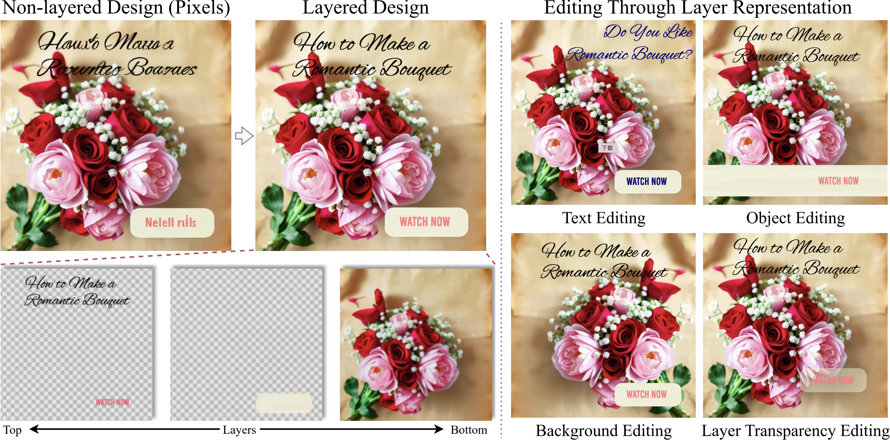
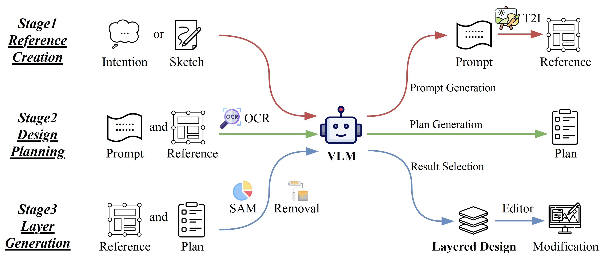
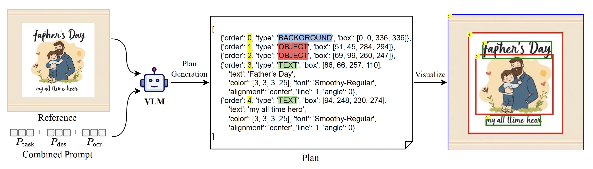
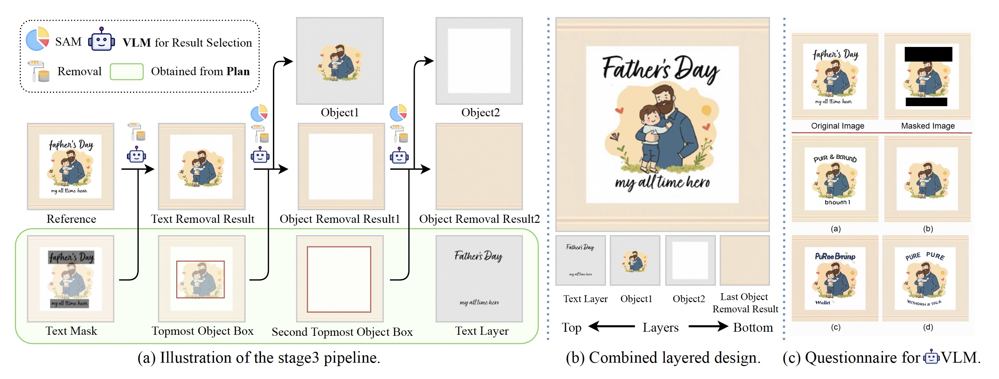
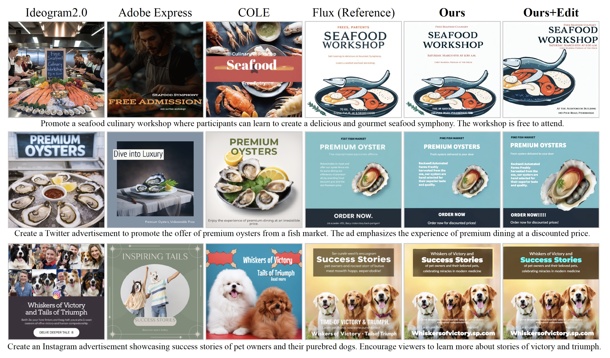
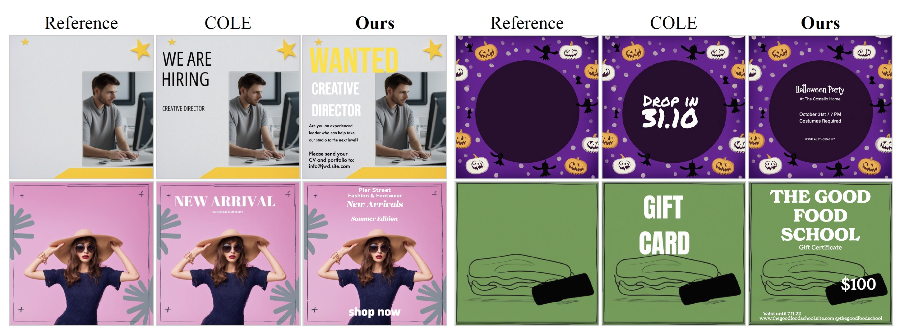
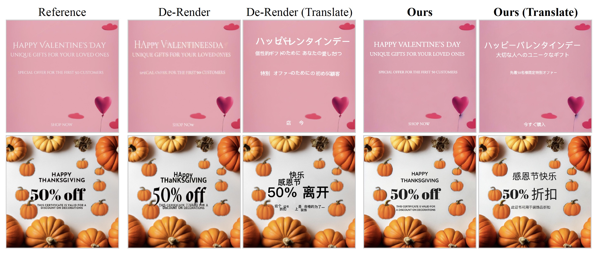
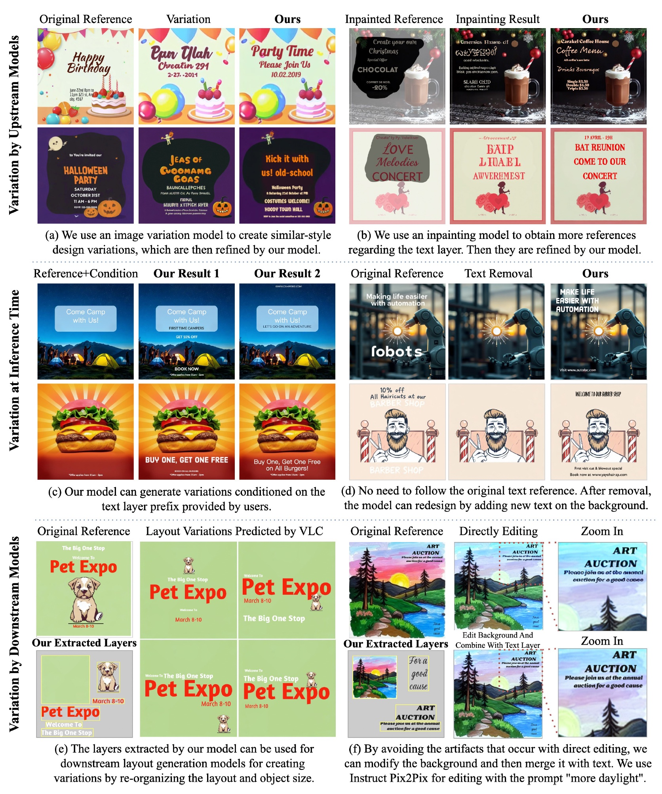

The proposed Accordion is a framework that converts AI-generated graphic designs into editable layered designs while replacing nonsensical AI text with meaningful content guided by user prompts. Unlike bottom-up methods (e.g., COLE, Open-COLE) that build layers element by element, Accordion adopts a top-down approach, using a reference image as global guidance to decompose layers. It employs vision language models (VLMs) across three stages and integrates vision experts like SAM and inpainting models to extract objects, backgrounds, and text. Trained on the Design39K dataset (augmented with refined AI-generated samples), Accordion achieves strong results on the DesignIntention benchmark for tasks such as text-to-template, text addition, and text de-rendering, producing editable and visually coherent graphic designs.

Accordion operates in three main stages:
This top-down approach ensures global visual harmony while maintaining full editability of the final design.


Accordion excels in multiple graphic design tasks:




Traditional bottom-up approaches (like COLE and Open-COLE) face several challenges:
Our top-down approach addresses these issues by:
@article{chen2025accordion,
title={Rethinking Layered Graphic Design Generation with a Top-Down Approach},
author={Chen, Jingye and Wang, Zhaowen and Zhao, Nanxuan and Zhang, Li and Liu, Difan and Yang, Jimei and Chen, Qifeng},
booktitle={ICCV},
year={2025}
}
{kind=link}